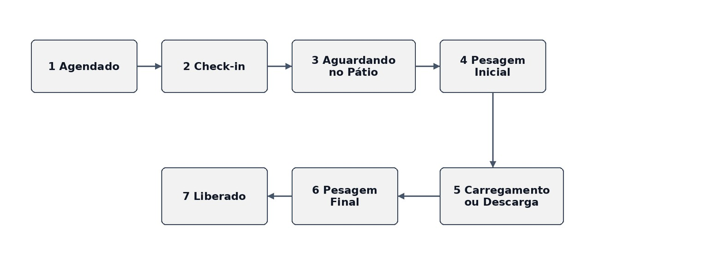
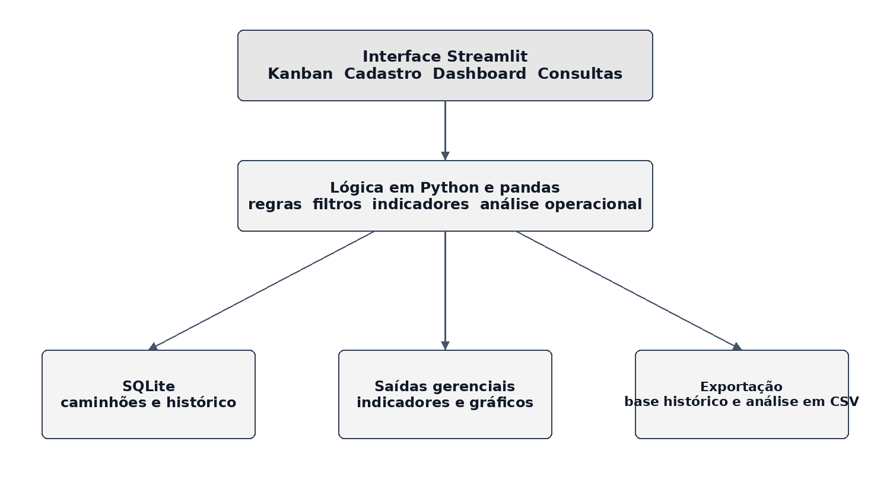
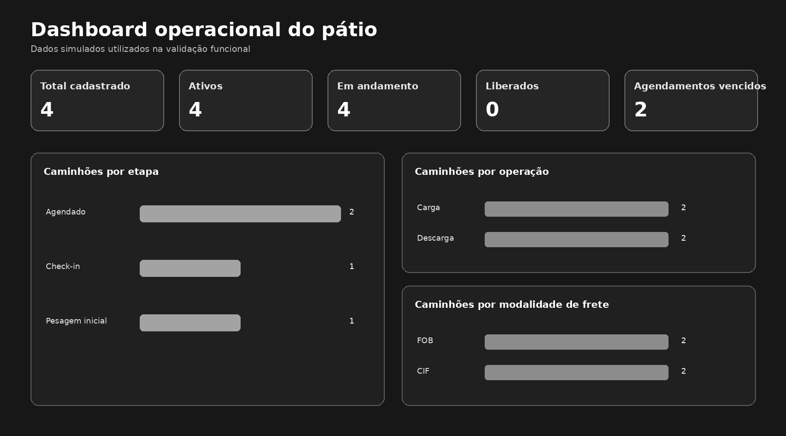

Centralização
Cadastro operacional e situação atual reunidos em uma base SQLite.
Trabalho de Conclusão de Curso · 2026
Protótipo desenvolvido para centralizar informações, padronizar etapas e registrar o histórico do fluxo de caminhões.
Problema e solução
O projeto responde à dispersão de informações entre planilhas, anotações e mensagens. Cada operação é registrada em um card e acompanhada até a liberação.
Cadastro operacional e situação atual reunidos em uma base SQLite.
Sete etapas fixas organizam o fluxo e reduzem ambiguidades de status.
Origem, destino, horário e ação são preservados no histórico.
Filtros, indicadores por etapa e exportação em CSV apoiam a conferência.
Fluxo operacional

Arquitetura
Linguagem utilizada nas regras, movimentações, consultas e indicadores.
Interface com Kanban, cadastro, dashboard e consultas.
Organização dos dados exibidos nos filtros, gráficos e exportações.
Armazenamento local das operações e do histórico de movimentações.

Ambiente e publicação
O desenvolvimento e os testes descritos no TCC ocorreram localmente em um notebook pessoal. O arquivo app.py foi iniciado pelo terminal com streamlit run app.py, e a interface foi acessada pelo navegador.
Python reúne as regras; Streamlit apresenta as telas; pandas organiza os dados; e SQLite mantém as operações e o histórico no arquivo local kanban_logistico.db.
JavaScript é usado somente nesta página. Excel não faz parte da execução do protótipo, mas pode abrir os arquivos CSV exportados.
O repositório contém a página e o PDF revisado. O código operacional do protótipo não integra a publicação pública.
Validação funcional
A rotina de validação utilizou quatro operações simuladas. O objetivo foi verificar o comportamento das funções, e não medir desempenho de uma empresa real.

Interpretação correta
Que o protótipo executa cadastro, movimentação, histórico, filtros, indicadores, análise por etapa e exportação.
Redução de filas, tempo, custos, mão de obra ou aumento de produtividade, pois não houve implantação real.
Aplicar o sistema em um pátio real, definir referências por etapa e comparar indicadores antes e depois.